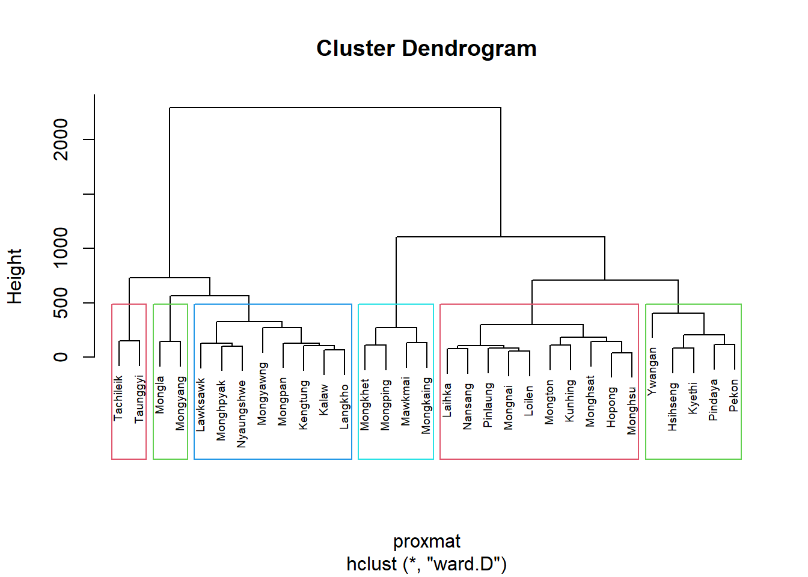
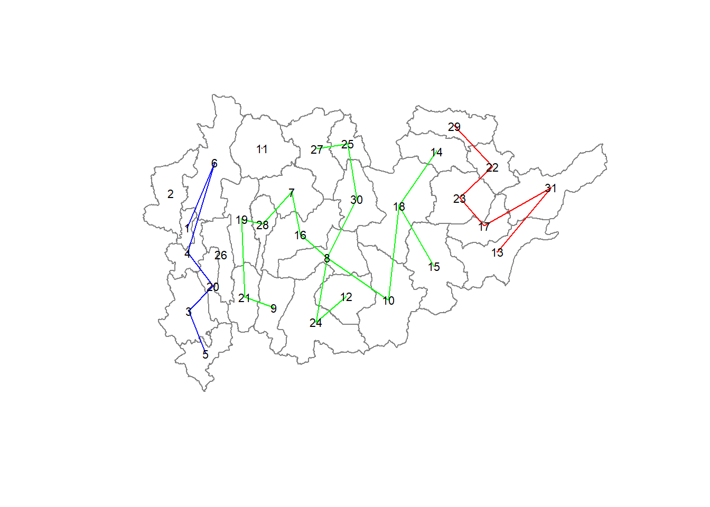

pacman:: p_load(rgdal,spdep,tmap, sf,ClustGeo,ggpubr,cluster, factoextra,
NbClust,heatmaply,corrplot,psych,tidyverse, knitr)Hands_On_Ex3 Geographical Segmentation with Spatially Constrained Clustering Techniques
1. Overview
In this hands-on exercise, we will gain hands-on experience on how to delineate homogeneous region by using geographically referenced multivariate data. There are two major analysis, namely:
Hierarchical cluster analysis and
Spatially constrained cluster analysis
1.1 Learning Outcome.
By the end of this hands-on exercise, we will able:
to convert GIS polygon data into R’s simple feature data.frame by using appropriate functions of sf package of R
to convert simple feature data.frame into R’s SpatialPolygonDataFrame object by using appropriate sf of package of R;
to perform cluster analysis by using hclust() of Base R;
to perform spatially constrained cluster analysis using skater() of Base R; and
to visualise the analysis output by using ggplot2 and tmap package.
1.2 Exercise Objective & The Analytical Question.
In geobusiness and spatial policy, it is a common practice to delineate the market or planning area into homogeneous regions by using multivariate data. In this hands-on exercise, we are interested to delineate Shan State, Myanmar into homogeneous regions by using multiple Information and Communication technology (ICT) measures, namely: Radio, Television, Land line phone, Mobile phone, Computer, and Internet at home. (which is multi-variate analysis)

1.3 Installing and loading R packages.
Before we get started, it is important for us to install required packages in R environment.
Following R packages will be loaded
For spatial data handling –> sf , sgdal and spdep
Attribute data handling -> tidyverse , readr , ggplot2 and dplyr
Choropleth Mapping -> tmap
Multivariate data visualization and analysis -> corrplot, ggpubr and heatmaply
Cluster Analysis -> cluster and ClustGeo
Code chunk below installs and launches theses packages in R environment
2. Data Import and Preparation.
2.1 Import Geospatial Data.
Here we import Myanmar Township Boundary GIS data & its associated attribute table into R environment.
The Myanmar Township Boundary data is in ESRI format and it will be imported into R environment by using st_read() function of sf
shan_sf <- st_read(dsn = "data/geospatial",
layer = "myanmar_township_boundaries")Reading layer `myanmar_township_boundaries' from data source
`C:\Yogendra345\ISSS624_A01\HandsOn_Exercise3\data\geospatial'
using driver `ESRI Shapefile'
Simple feature collection with 330 features and 14 fields
Geometry type: MULTIPOLYGON
Dimension: XY
Bounding box: xmin: 92.17275 ymin: 9.671252 xmax: 101.1699 ymax: 28.54554
Geodetic CRS: WGS 84shan_sf_ST <- shan_sf %>% filter(ST %in% c("Shan (East)", "Shan (Earth)", "Shan (South)")) The imported township boundary object is called shan_sf_ST. It is saved in simple feature data.frame format. We can view the content of the newly created shan_sf_ST simple features data.frame by using the code chunk below.
shan_sf_STSimple feature collection with 31 features and 14 fields
Geometry type: MULTIPOLYGON
Dimension: XY
Bounding box: xmin: 96.20361 ymin: 19.29932 xmax: 101.1699 ymax: 22.26853
Geodetic CRS: WGS 84
First 10 features:
OBJECTID ST ST_PCODE DT DT_PCODE TS TS_PCODE
1 203 Shan (South) MMR014 Taunggyi MMR014D001 Pindaya MMR014006
2 240 Shan (South) MMR014 Taunggyi MMR014D001 Ywangan MMR014007
3 106 Shan (South) MMR014 Taunggyi MMR014D001 Pinlaung MMR014009
4 40 Shan (South) MMR014 Taunggyi MMR014D001 Kalaw MMR014005
5 194 Shan (South) MMR014 Taunggyi MMR014D001 Pekon MMR014010
6 159 Shan (South) MMR014 Taunggyi MMR014D001 Lawksawk MMR014008
7 155 Shan (South) MMR014 Loilen MMR014D002 Laihka MMR014012
8 101 Shan (South) MMR014 Langkho MMR014D003 Mongnai MMR014019
9 105 Shan (South) MMR014 Langkho MMR014D003 Mawkmai MMR014020
10 0 Shan (East) MMR016 Monghsat MMR016D002 Mongton MMR016008
ST_2 LABEL2 SELF_ADMIN ST_RG T_NAME_WIN T_NAME_M3
1 Shan State (South) Pindaya\n77769 Danu State yif;w, ပင်းတယ
2 Shan State (South) Ywangan\n76933 Danu State &GmiH ရွာငံ
3 Shan State (South) Pinlaung\n162537 Pa-O State yifavmif; ပင်လောင်း
4 Shan State (South) Kalaw\n163138 <NA> State uavm ကလော
5 Shan State (South) Pekon\n94226 <NA> State z,fcHk ဖယ်ခုံ
6 Shan State (South) Lawksawk <NA> State &yfapmuf ရပ်စောက်
7 Shan State (South) Laihka\n44329 <NA> State vJcsm; လဲချား
8 Shan State (South) Mongnai\n25019 <NA> State rdk;eJ မိုးနဲ
9 Shan State (South) Mawkmai\n24860 <NA> State armufr,f မောက်မယ်
10 Shan State (East) Mongton\n49143 <NA> State rdkif;wHk မိုင်းတုံ
AREA geometry
1 629.025 MULTIPOLYGON (((96.7731 21....
2 2984.377 MULTIPOLYGON (((96.78483 21...
3 3396.963 MULTIPOLYGON (((96.49518 20...
4 1456.624 MULTIPOLYGON (((96.49518 20...
5 2073.513 MULTIPOLYGON (((97.14738 19...
6 5145.659 MULTIPOLYGON (((96.94981 22...
7 2796.608 MULTIPOLYGON (((97.8399 21....
8 3212.461 MULTIPOLYGON (((98.50485 20...
9 2441.520 MULTIPOLYGON (((97.64508 20...
10 5169.468 MULTIPOLYGON (((98.99319 20...Notice that sf.data.frame is conformed to Hardy Wickham’s tidy framework.
Since shan_sf_ST is conformed to tidy framework, we can also glimpse() to reveal the data type of it’s fields.
glimpse(shan_sf_ST)Rows: 31
Columns: 15
$ OBJECTID <dbl> 203, 240, 106, 40, 194, 159, 155, 101, 105, 0, 56, 196, 41,…
$ ST <chr> "Shan (South)", "Shan (South)", "Shan (South)", "Shan (Sout…
$ ST_PCODE <chr> "MMR014", "MMR014", "MMR014", "MMR014", "MMR014", "MMR014",…
$ DT <chr> "Taunggyi", "Taunggyi", "Taunggyi", "Taunggyi", "Taunggyi",…
$ DT_PCODE <chr> "MMR014D001", "MMR014D001", "MMR014D001", "MMR014D001", "MM…
$ TS <chr> "Pindaya", "Ywangan", "Pinlaung", "Kalaw", "Pekon", "Lawksa…
$ TS_PCODE <chr> "MMR014006", "MMR014007", "MMR014009", "MMR014005", "MMR014…
$ ST_2 <chr> "Shan State (South)", "Shan State (South)", "Shan State (So…
$ LABEL2 <chr> "Pindaya\n77769", "Ywangan\n76933", "Pinlaung\n162537", "Ka…
$ SELF_ADMIN <chr> "Danu", "Danu", "Pa-O", NA, NA, NA, NA, NA, NA, NA, NA, NA,…
$ ST_RG <chr> "State", "State", "State", "State", "State", "State", "Stat…
$ T_NAME_WIN <chr> "yif;w,", "&GmiH", "yifavmif;", "uavm", "z,fcHk", "&yfapmuf…
$ T_NAME_M3 <chr> "ပင်းတယ", "ရွာငံ", "ပင်လောင်း", "ကလော", "ဖယ်ခုံ", "ရပ်စောက်", "လဲချား"…
$ AREA <dbl> 629.025, 2984.377, 3396.963, 1456.624, 2073.513, 5145.659, …
$ geometry <MULTIPOLYGON [°]> MULTIPOLYGON (((96.7731 21...., MULTIPOLYGON (…2.2 Importing aspatial data into R environment.
We use read_csv function of readr package.
ict <- read_csv("data/aspatial/Shan-ICT.csv")Rows: 55 Columns: 11
── Column specification ────────────────────────────────────────────────────────
Delimiter: ","
chr (4): District Pcode, District Name, Township Pcode, Township Name
dbl (7): Total households, Radio, Television, Land line phone, Mobile phone,...
ℹ Use `spec()` to retrieve the full column specification for this data.
ℹ Specify the column types or set `show_col_types = FALSE` to quiet this message.The imported InfoComm variables are extracted from The 2014 Myanmar Population and Housing Census Myanmar. The attribute data set is called ict. It is saved in R’s * tibble data.frame* format.
The code chunk below reveal the summary statistics of ict data.frame.
summary(ict) District Pcode District Name Township Pcode Township Name
Length:55 Length:55 Length:55 Length:55
Class :character Class :character Class :character Class :character
Mode :character Mode :character Mode :character Mode :character
Total households Radio Television Land line phone
Min. : 3318 Min. : 115 Min. : 728 Min. : 20.0
1st Qu.: 8711 1st Qu.: 1260 1st Qu.: 3744 1st Qu.: 266.5
Median :13685 Median : 2497 Median : 6117 Median : 695.0
Mean :18369 Mean : 4487 Mean :10183 Mean : 929.9
3rd Qu.:23471 3rd Qu.: 6192 3rd Qu.:13906 3rd Qu.:1082.5
Max. :82604 Max. :30176 Max. :62388 Max. :6736.0
Mobile phone Computer Internet at home
Min. : 150 Min. : 20.0 Min. : 8.0
1st Qu.: 2037 1st Qu.: 121.0 1st Qu.: 88.0
Median : 3559 Median : 244.0 Median : 316.0
Mean : 6470 Mean : 575.5 Mean : 760.2
3rd Qu.: 7177 3rd Qu.: 507.0 3rd Qu.: 630.5
Max. :48461 Max. :6705.0 Max. :9746.0 2.3 Derive new variables using dplyr package.
The unit of measurement of the values are number of households. Using these values directly will be biased by the underlying total number of households.
In general, the townships with relatively higher total number of households will also have higher number of households owning radio, TV, etc.
In order to overcome this problem, we will derive the penetration rate of each ICT variable by using the code chunk below.
ict_derived <- ict %>%
mutate(`RADIO_PR` = `Radio`/`Total households`*1000) %>%
mutate(`TV_PR` = `Television`/`Total households`*1000) %>%
mutate(`LLPHONE_PR` = `Land line phone`/`Total households`*1000) %>%
mutate(`MPHONE_PR` = `Mobile phone`/`Total households`*1000) %>%
mutate(`COMPUTER_PR` = `Computer`/`Total households`*1000) %>%
mutate(`INTERNET_PR` = `Internet at home`/`Total households`*1000) %>%
rename(`DT_PCODE` =`District Pcode`,`DT`=`District Name`,
`TS_PCODE`=`Township Pcode`, `TS`=`Township Name`,
`TT_HOUSEHOLDS`=`Total households`,
`RADIO`=`Radio`, `TV`=`Television`,
`LLPHONE`=`Land line phone`, `MPHONE`=`Mobile phone`,
`COMPUTER`=`Computer`, `INTERNET`=`Internet at home`) Let us review the summary statistics of the newly derived penetration rates using the code chunk below.
summary(ict_derived) DT_PCODE DT TS_PCODE TS
Length:55 Length:55 Length:55 Length:55
Class :character Class :character Class :character Class :character
Mode :character Mode :character Mode :character Mode :character
TT_HOUSEHOLDS RADIO TV LLPHONE
Min. : 3318 Min. : 115 Min. : 728 Min. : 20.0
1st Qu.: 8711 1st Qu.: 1260 1st Qu.: 3744 1st Qu.: 266.5
Median :13685 Median : 2497 Median : 6117 Median : 695.0
Mean :18369 Mean : 4487 Mean :10183 Mean : 929.9
3rd Qu.:23471 3rd Qu.: 6192 3rd Qu.:13906 3rd Qu.:1082.5
Max. :82604 Max. :30176 Max. :62388 Max. :6736.0
MPHONE COMPUTER INTERNET RADIO_PR
Min. : 150 Min. : 20.0 Min. : 8.0 Min. : 21.05
1st Qu.: 2037 1st Qu.: 121.0 1st Qu.: 88.0 1st Qu.:138.95
Median : 3559 Median : 244.0 Median : 316.0 Median :210.95
Mean : 6470 Mean : 575.5 Mean : 760.2 Mean :215.68
3rd Qu.: 7177 3rd Qu.: 507.0 3rd Qu.: 630.5 3rd Qu.:268.07
Max. :48461 Max. :6705.0 Max. :9746.0 Max. :484.52
TV_PR LLPHONE_PR MPHONE_PR COMPUTER_PR
Min. :116.0 Min. : 2.78 Min. : 36.42 Min. : 3.278
1st Qu.:450.2 1st Qu.: 22.84 1st Qu.:190.14 1st Qu.:11.832
Median :517.2 Median : 37.59 Median :305.27 Median :18.970
Mean :509.5 Mean : 51.09 Mean :314.05 Mean :24.393
3rd Qu.:606.4 3rd Qu.: 69.72 3rd Qu.:428.43 3rd Qu.:29.897
Max. :842.5 Max. :181.49 Max. :735.43 Max. :92.402
INTERNET_PR
Min. : 1.041
1st Qu.: 8.617
Median : 22.829
Mean : 30.644
3rd Qu.: 41.281
Max. :117.985 Notice that six new fields have been added into the data.frame. They are RADIO_PR, TV_PR, LLPHONE_PR, MPHONE_PR, COMPUTER_PR, and INTERNET_PR.
3. Exploratory Data Analysis.
We can plot the distribution of the variables (i.e. Number of households with radio) by using appropriate Exploratory Data Analysis (EDA) as shown in the code chunk below.
Histogram is useful to identify the overall distribution of the data values (i.e. left skew, right skew or normal distribution)
ggplot(data = ict_derived,
aes(x=`RADIO`))+
geom_histogram(bins=20,
color="black",
fill="light blue")
Boxplot are useful to detect if there are outliers.
ggplot(data = ict_derived,
aes(x=`RADIO`))+
geom_boxplot(color='black',
fill='light blue')
Let us now plot the distribution of newly created variables.( Radio Penetration Rate ) by using the code chunk below :
ggplot(data = ict_derived,
aes(x=`RADIO_PR`))+
geom_histogram(bins = 10,alpha=0.3,
color = 'black',
fill = "light green")+
geom_density(size = 1.1, color = "red")Warning: Using `size` aesthetic for lines was deprecated in ggplot2 3.4.0.
ℹ Please use `linewidth` instead.ggplot(data = ict_derived,
aes(x=`RADIO_PR`,))+
geom_boxplot(color="turquoise2",
fill="wheat",notch = TRUE)Let us plot multiple histograms and then arrange them together.
radio <- ggplot(data = ict_derived,
aes(x=`RADIO_PR`))+
geom_histogram(bins=20,
color = 'black',
fill= 'light blue')+
labs(title="Radio count histogram plot",x="Radio_PR", y = "Count")+
theme_classic()
tv <- ggplot(data = ict_derived,
aes(x=`TV_PR`))+
geom_histogram(bins=20,binwidth =35,
color='grey',
fill = 'light green',
alpha = 0.3)+
labs(title="TV count histogram plot",x="TV_PR", y = "Count")+
theme_classic()
##
llphone <- ggplot(data = ict_derived,
aes(x=`LLPHONE_PR`))+
geom_histogram(bins = 20,
show.legend = TRUE,
color='black',
fill='yellow',alpha=0.4)+
labs(title="Land Line Phone count histogram plot",
x="LLPHONE_PR", y = "Count")+
theme_classic()
##
mphone <- ggplot(data = ict_derived,
aes(x=`MPHONE_PR`))+
geom_histogram(bins = 20,
color='grey',
fill='light blue')
##
computer <- ggplot(data = ict_derived,
aes(x=`COMPUTER_PR`))+
geom_histogram(bins=20,alpha=0.3,
color='grey',
fill='magenta')
##
internet <- ggplot(data = ict_derived,
aes(x=`INTERNET_PR`))+
geom_histogram(bins=20,
alpha=0.3,
color='blue',
fill='yellow')Next, ggarange() function of ggpubr package is used to group the histograms together.
ggarrange(radio,tv,llphone,mphone,computer,internet,
ncol = 3,
nrow = 2)4. EDA using Choropleth map.
4.1 Joining aspatial data with geospatial data.
Before we can prepare Choropleth map,we need to combine both aspatial data frame (ict_derived)
and geospatial data(shan_sf_ST).
This will be performed by left_join function of dplyr package. The shan_sf_ST simple feature data frame will be used as the base data object and the ict_derived data frame will be used as the join table.
shan_sf_ST <- left_join(shan_sf_ST,
ict_derived, by=c("TS_PCODE"="TS_PCODE"))
write_rds(shan_sf_ST, "data/rds/shan_sf_ST.rds")The code chunks below is used to perform the task. The unique identifier used to join both data objects is TS_PCODE. It is important to note that there is no new output data been created. Instead, the data fields from ict_derived data frame are now updated into the data frame of shan_sf.
shan_sf_final <- read_rds("data/rds/shan_sf_ST.rds")4.2 Preparing Choropleth Map.
qtm(shan_sf_final, "RADIO_PR")We will create two choropleth maps, one for the total number of households (i.e. TT_HOUSEHOLDS.map) and one for the total number of household with Radio (RADIO.map) by using the code chunk below.
TT_HOUSEHOLDS.map <- tm_shape(shan_sf_final) +
tm_fill(col = "TT_HOUSEHOLDS",
n = 5,
style = "jenks",
title = "Total households") +
tm_borders(alpha = 0.5)
##
RADIO.map <- tm_shape(shan_sf_final) +
tm_fill(col = "RADIO",
n = 5,
style = "jenks",
title = "Number Radio ") +
tm_borders(alpha = 0.5)
##
tmap_arrange(TT_HOUSEHOLDS.map, RADIO.map,
asp=NA, ncol=2)Notice that the choropleth maps above clearly show that townships with relatively larger number ot households are also showing relatively higher number of radio ownership.
Now let us plot the choropleth maps showing the distribution of total number of households and Radio penetration rate by using the code chunk below.
tm_shape(shan_sf_final) +
tm_polygons(c("TT_HOUSEHOLDS", "RADIO_PR"),
style="jenks") +
tm_facets(sync = TRUE, ncol = 2) +
tm_legend(legend.position = c("right", "bottom"))+
tm_layout(outer.margins=0, asp=0)5. Correlation Analysis.
cluster_vars.cor = cor(ict_derived[,12:17])
corrplot.mixed(cluster_vars.cor,
lower = "ellipse",
upper = "number",
tl.pos = "lt",
diag = "l",
tl.col = "black")
The correlation plot above shows that COMPUTER_PR and INTERNET_PR are highly correlated. This suggest that only one of them should be used in the cluster analysis instead of both.
6. Hierarchy Cluster Analysis.
Let us perform hierarchical cluster analysis using 4 steps.
6.1 Extracting clustering variables.
The code chunk below will be used to extract the clustering variables from the shan_sf_final simple feature object into data.frame.
cluster_vars <- shan_sf_final %>%
st_set_geometry(NULL) %>%
select("TS.x", "RADIO_PR", "TV_PR", "LLPHONE_PR", "MPHONE_PR", "COMPUTER_PR")
head(cluster_vars,10) TS.x RADIO_PR TV_PR LLPHONE_PR MPHONE_PR COMPUTER_PR
1 Pindaya 417.46466 505.1300 19.835841 162.39170 12.881897
2 Ywangan 484.52147 260.5734 11.935906 120.28559 4.414650
3 Pinlaung 231.64994 541.7189 28.544542 249.49028 13.762547
4 Kalaw 280.76244 611.6204 42.064778 408.79514 29.631601
5 Pekon 318.61183 535.8494 39.832703 214.84764 18.970325
6 Lawksawk 387.10175 630.0035 31.513657 320.56863 21.766768
7 Laihka 153.35609 590.5575 65.529010 261.43345 27.758817
8 Mongnai 182.51928 515.9062 5.141388 267.51285 28.277635
9 Mawkmai 97.44231 234.5010 2.780095 36.41924 7.784265
10 Mongton 193.51808 388.4453 25.129169 290.51198 21.841240Notice that the final clustering variables list does not include variable INTERNET_PR because it is highly correlated with variable COMPUTER_PR.
Next, we need to change the rows by township name instead of row number by using the code chunk below
row.names(cluster_vars) <- cluster_vars$"TS.x"
head(cluster_vars,10) TS.x RADIO_PR TV_PR LLPHONE_PR MPHONE_PR COMPUTER_PR
Pindaya Pindaya 417.46466 505.1300 19.835841 162.39170 12.881897
Ywangan Ywangan 484.52147 260.5734 11.935906 120.28559 4.414650
Pinlaung Pinlaung 231.64994 541.7189 28.544542 249.49028 13.762547
Kalaw Kalaw 280.76244 611.6204 42.064778 408.79514 29.631601
Pekon Pekon 318.61183 535.8494 39.832703 214.84764 18.970325
Lawksawk Lawksawk 387.10175 630.0035 31.513657 320.56863 21.766768
Laihka Laihka 153.35609 590.5575 65.529010 261.43345 27.758817
Mongnai Mongnai 182.51928 515.9062 5.141388 267.51285 28.277635
Mawkmai Mawkmai 97.44231 234.5010 2.780095 36.41924 7.784265
Mongton Mongton 193.51808 388.4453 25.129169 290.51198 21.841240The row number has been replaced into the township name.
Now, we will delete the TS.x field by using the code chunk below.
shan_ict <- select(cluster_vars, c(2:6))
head(shan_ict, 10) RADIO_PR TV_PR LLPHONE_PR MPHONE_PR COMPUTER_PR
Pindaya 417.46466 505.1300 19.835841 162.39170 12.881897
Ywangan 484.52147 260.5734 11.935906 120.28559 4.414650
Pinlaung 231.64994 541.7189 28.544542 249.49028 13.762547
Kalaw 280.76244 611.6204 42.064778 408.79514 29.631601
Pekon 318.61183 535.8494 39.832703 214.84764 18.970325
Lawksawk 387.10175 630.0035 31.513657 320.56863 21.766768
Laihka 153.35609 590.5575 65.529010 261.43345 27.758817
Mongnai 182.51928 515.9062 5.141388 267.51285 28.277635
Mawkmai 97.44231 234.5010 2.780095 36.41924 7.784265
Mongton 193.51808 388.4453 25.129169 290.51198 21.8412406.2 Data Standardization.
In general, multiple variables will be used in cluster analysis. It is not unusual their values range are different. In order to avoid the cluster analysis result is biased to clustering variables with large values, it is useful to standardize the input variables before performing cluster analysis.
6.2.1 Min-Max standardization.
In the code chunk below, normalize() of heatmaply package is used to stadardisation the clustering variables by using Min-Max method. The summary() is then used to display the summary statistics of the standardised clustering variables.
shan_ict.std <- normalize(shan_ict)
summary(shan_ict.std) RADIO_PR TV_PR LLPHONE_PR MPHONE_PR
Min. :0.0000 Min. :0.0000 Min. :0.0000 Min. :0.0000
1st Qu.:0.2117 1st Qu.:0.5315 1st Qu.:0.1580 1st Qu.:0.2199
Median :0.3803 Median :0.6236 Median :0.2434 Median :0.3306
Mean :0.3991 Mean :0.6126 Mean :0.3236 Mean :0.3722
3rd Qu.:0.5522 3rd Qu.:0.7349 3rd Qu.:0.4924 3rd Qu.:0.5099
Max. :1.0000 Max. :1.0000 Max. :1.0000 Max. :1.0000
COMPUTER_PR
Min. :0.00000
1st Qu.:0.09561
Median :0.19721
Mean :0.24552
3rd Qu.:0.29234
Max. :1.00000 Notice that the values range of the Min-max standardized clustering variables are 0-1 now.
6.2.2 Z-score standardization.
Z-score standardization can be performed easily by using scale() of Base R. The code chunk below will be used to standardization the clustering variables by using Z-score method.
shan_ict.z <- scale(shan_ict)
describe(shan_ict.z) vars n mean sd median trimmed mad min max range skew kurtosis
RADIO_PR 1 31 0 1 -0.07 -0.04 0.99 -1.53 2.30 3.82 0.39 -0.72
TV_PR 2 31 0 1 0.05 0.05 0.70 -2.65 1.68 4.33 -0.60 0.20
LLPHONE_PR 3 31 0 1 -0.31 -0.12 0.58 -1.26 2.64 3.90 1.02 0.25
MPHONE_PR 4 31 0 1 -0.18 -0.07 0.96 -1.60 2.70 4.30 0.62 0.01
COMPUTER_PR 5 31 0 1 -0.20 -0.19 0.63 -1.04 3.18 4.22 1.70 2.42
se
RADIO_PR 0.18
TV_PR 0.18
LLPHONE_PR 0.18
MPHONE_PR 0.18
COMPUTER_PR 0.18Notice the mean and standard deviation of the Z-score standardised clustering variables are 0 and 1 respectively.
Note: describe() of psych package is used here instead of summary() of Base R because the earlier provides standard deviation.
Warning: Z-score standardization method should only be used if we would assume all variables come from some normal distribution.
6.3 Visualizing the standardized clustering variables.
Beside reviewing the summary statistics of the standardised clustering variables, it is also a good practice to visualize their distribution graphically
The code chunk below plots the scaled Radio_PR field.
r <- ggplot(data=ict_derived,
aes(x= `RADIO_PR`)) +
geom_histogram(bins=20,
color="black",
fill="light blue") +
ggtitle("Raw values without standardisation")
shan_ict_s_df <- as.data.frame(shan_ict.std)
s <- ggplot(data=shan_ict_s_df,
aes(x=`RADIO_PR`)) +
geom_histogram(bins=20,
color="black",
fill="light blue") +
ggtitle("Min-Max Standardisation")
shan_ict_z_df <- as.data.frame(shan_ict.z)
z <- ggplot(data=shan_ict_z_df,
aes(x=`RADIO_PR`)) +
geom_histogram(bins=20,
color="black",
fill="light blue") +
ggtitle("Z-score Standardisation")
ggarrange(r, s, z,
ncol = 3,
nrow = 1)r <- ggplot(data=ict_derived,
aes(x= `RADIO_PR`)) +
geom_density(color="black",
fill="light blue") +
ggtitle("Raw values without standardisation")
##
shan_ict_s_df <- as.data.frame(shan_ict.std)
##
s <- ggplot(data=shan_ict_s_df,
aes(x=`RADIO_PR`)) +
geom_density(color="black",
fill="light blue") +
ggtitle("Min-Max Standardisation")
##
shan_ict_z_df <- as.data.frame(shan_ict.z)
z <- ggplot(data=shan_ict_z_df,
aes(x=`RADIO_PR`)) +
geom_density(color="black",
fill="light blue") +
ggtitle("Z-score Standardisation")
##
##
ggarrange(r, s, z,
ncol = 2,
nrow = 2)6.4 Computing proximity matrix.
Here, we will compute the proximity matrix by using dist() of R.
dist() supports six distance proximity calculations, they are:
euclidean,
maximum,
manhattan,
canberra,
binary and
minkowski.
The default is euclidean proximity matrix. The code chunk below is used to compute the proximity matrix using euclidean method.
proxmat <- dist(shan_ict, method = 'euclidean')
The code chunk below can then be used to list the content of proxmat for visual inspection.
proxmat Pindaya Ywangan Pinlaung Kalaw Pekon Lawksawk
Ywangan 257.31610
Pinlaung 208.63519 400.05492
Kalaw 302.51785 499.53297 181.96406
Pekon 117.91580 336.50410 94.61225 211.91531
Lawksawk 204.32952 432.16535 192.57320 140.01101 157.51129
Laihka 298.61288 491.83321 101.10150 197.34633 182.23667 246.74469
Mongnai 258.49346 422.71934 64.52387 200.34668 151.60031 241.71260
Mawkmai 437.99577 397.03752 398.11227 562.59200 416.00669 567.52693
Mongton 283.35574 361.23257 163.42143 267.87522 208.14888 311.07742
Mongkaing 481.71125 364.98429 476.29056 625.24500 480.23965 625.18712
Mongpan 335.72896 483.68125 192.78316 114.69105 243.30037 228.54223
Tachileik 635.51774 807.44220 555.01039 373.64459 573.39528 441.82621
Mongkhet 391.74783 408.97731 305.86058 465.52013 342.08722 487.41102
Monghsat 314.71506 432.98028 160.44703 317.96188 225.64279 352.31496
Nansang 275.44246 472.77637 85.49572 124.30500 160.37607 188.78869
Monghpyak 221.30579 367.44835 222.20020 167.08436 190.93173 142.31691
Mongping 310.64850 337.94020 229.75261 375.64739 259.68288 396.47081
Hopong 223.06050 352.85844 98.14855 264.16294 138.86577 274.91604
Nyaungshwe 216.52463 407.11649 138.12050 95.66782 139.31874 104.17830
Hsihseng 172.00796 342.91035 111.61846 287.11074 105.30573 257.11202
Mongla 549.42389 728.16301 372.59678 260.26411 441.20998 393.18472
Kengtung 385.68322 573.23173 263.48638 88.29335 297.67761 209.38215
Langkho 323.28133 507.78892 168.44228 67.19580 219.21623 190.30257
Monghsu 198.35391 340.42789 80.86834 237.34578 113.84636 242.04063
Taunggyi 503.75471 697.98323 429.54386 252.26066 440.66133 304.96838
Kyethi 175.54012 287.29358 189.47065 360.17247 162.43575 317.74604
Loilen 293.61143 469.51621 91.56527 217.19877 181.94596 265.29318
Mongyang 475.93982 630.71590 286.03834 233.56349 363.58788 363.37684
Kunhing 318.23811 449.67218 141.58836 197.63683 213.46379 278.68953
Mongyawng 332.92193 570.56521 235.55497 173.43078 248.43910 179.07229
Laihka Mongnai Mawkmai Mongton Mongkaing Mongpan
Ywangan
Pinlaung
Kalaw
Pekon
Lawksawk
Laihka
Mongnai 100.53457
Mawkmai 429.96554 374.50873
Mongton 212.07320 131.67061 313.35220
Mongkaing 522.96309 456.00842 133.29995 365.50032
Mongpan 210.76951 178.09554 509.99632 200.31803 563.56780
Tachileik 549.08985 563.95232 919.38755 608.76740 967.14087 411.03849
Mongkhet 324.97428 275.76855 115.58388 223.22828 222.60577 412.17123
Monghsat 158.93517 125.25968 275.09705 150.98053 375.60376 283.30992
Nansang 78.78999 92.79567 462.41938 199.58124 542.16609 144.77393
Monghpyak 293.22640 253.26470 536.71695 258.04282 568.21089 187.85699
Mongping 272.82761 202.99615 194.31049 119.86993 257.18572 318.47482
Hopong 157.48857 91.53795 302.84362 106.21031 379.37916 239.43845
Nyaungshwe 201.71653 169.63695 502.99026 219.72196 557.32112 137.29734
Hsihseng 175.89761 142.36728 329.29477 194.64317 411.59788 295.87811
Mongla 315.93218 354.10985 686.88950 411.06668 761.48327 253.20001
Kengtung 258.23950 272.28711 632.54638 329.38387 692.74693 142.21554
Langkho 160.94435 174.67678 531.08019 236.70878 597.42714 94.98486
Monghsu 163.28926 84.11238 332.07962 107.04894 400.71816 216.25326
Taunggyi 425.36916 448.55282 810.74692 508.40925 866.21117 319.81385
Kyethi 255.83275 210.50453 278.85535 222.52947 352.06533 358.89620
Loilen 59.69478 58.41263 388.73386 176.16001 482.18190 207.25000
Mongyang 229.71502 260.39387 558.83162 295.60023 631.91325 194.93467
Kunhing 142.03682 110.55197 398.43973 114.03609 465.03971 137.85278
Mongyawng 211.99976 275.77546 620.04321 375.22688 700.98284 275.15989
Tachileik Mongkhet Monghsat Nansang Monghpyak Mongping
Ywangan
Pinlaung
Kalaw
Pekon
Lawksawk
Laihka
Mongnai
Mawkmai
Mongton
Mongkaing
Mongpan
Tachileik
Mongkhet 820.50164
Monghsat 677.09508 167.98445
Nansang 486.77266 360.99219 201.92690
Monghpyak 444.04411 462.63265 356.84917 227.52638
Mongping 727.08969 113.80917 140.95392 287.36626 354.76537
Hopong 632.45718 212.99485 100.45714 167.66291 267.95563 134.00139
Nyaungshwe 445.81335 417.08639 286.37238 131.18943 103.97300 319.32583
Hsihseng 658.87060 256.70338 153.49551 193.53779 285.37627 199.64389
Mongla 347.33155 574.40292 429.00536 289.45119 408.03397 512.61580
Kengtung 295.90429 531.35998 383.72138 193.67980 221.47613 442.80821
Langkho 402.33622 428.08061 279.52329 99.39859 200.27496 343.96455
Monghsu 605.02113 247.73318 137.24737 153.59962 232.17823 158.90478
Taunggyi 150.84117 712.80752 562.88102 365.04897 334.17439 621.53039
Kyethi 728.87329 233.25039 190.50609 273.02385 328.16234 187.43974
Loilen 573.75476 284.76895 118.65144 94.23028 296.99681 231.99959
Mongyang 448.79027 445.40621 312.64797 218.49285 358.17599 387.80686
Kunhing 532.26397 292.49814 165.38834 128.20940 250.74435 212.59619
Mongyawng 432.10118 522.91815 364.40429 191.11990 285.56475 455.59190
Hopong Nyaungshwe Hsihseng Mongla Kengtung Langkho
Ywangan
Pinlaung
Kalaw
Pekon
Lawksawk
Laihka
Mongnai
Mawkmai
Mongton
Mongkaing
Mongpan
Tachileik
Mongkhet
Monghsat
Nansang
Monghpyak
Mongping
Hopong
Nyaungshwe 209.32532
Hsihseng 91.65458 225.80242
Mongla 432.31105 347.60273 478.66210
Kengtung 340.47382 177.75714 370.72441 202.45004
Langkho 239.63685 128.26577 276.27441 229.01675 107.16213
Monghsu 43.40665 173.82799 97.82470 424.51868 316.91914 221.84918
Taunggyi 513.76415 325.09619 528.14240 297.09863 186.28225 288.27478
Kyethi 136.49038 288.06872 84.04049 556.02500 444.26274 350.91512
Loilen 124.74445 206.40432 158.84853 338.67408 282.22935 184.10672
Mongyang 323.35704 294.29500 382.59743 146.66661 217.08047 175.35413
Kunhing 145.15617 189.97131 220.15490 306.47566 245.95083 146.38284
Mongyawng 326.59925 218.12104 309.51462 315.57550 203.87199 186.11584
Monghsu Taunggyi Kyethi Loilen Mongyang Kunhing
Ywangan
Pinlaung
Kalaw
Pekon
Lawksawk
Laihka
Mongnai
Mawkmai
Mongton
Mongkaing
Mongpan
Tachileik
Mongkhet
Monghsat
Nansang
Monghpyak
Mongping
Hopong
Nyaungshwe
Hsihseng
Mongla
Kengtung
Langkho
Monghsu
Taunggyi 486.91951
Kyethi 146.61572 599.57407
Loilen 131.55208 455.91617 232.32965
Mongyang 323.95988 374.58247 453.86726 246.76592
Kunhing 146.78891 429.98509 278.95182 130.39336 188.89405
Mongyawng 312.85089 287.73864 387.71518 261.75211 304.21734 295.359846.5 Computing hierarchical clustering.
In R, there are several packages provide hierarchical clustering function. In this hands-on exercise, hclust() of R stats will be used.
hclust() employed agglomeration method to compute the cluster. Eight clustering algorithms are supported, they are: ward.D, ward.D2, single, complete, average(UPGMA), mcquitty(WPGMA), median(WPGMC) and centroid(UPGMC).
The code chunk below performs hierarchical cluster analysis using ward.D method. The hierarchical clustering output is stored in an object of class hclust which describes the tree produced by the clustering process.
hclust_ward <- hclust(proxmat, method = 'ward.D')We can then plot the tree by using plot() of R Graphics as shown in the code chunk below.
plot(hclust_ward, cex = 0.6)6.6 Selecting the optimal clustering algorithm.
One of the challenge in performing hierarchical clustering is to identify stronger clustering structures. The issue can be solved by using use agnes() function of cluster package. It functions like hclus(), however, with the agnes() function you can also get the agglomerative coefficient, which measures the amount of clustering structure found (values closer to 1 suggest strong clustering structure).
The code chunk below will be used to compute the agglomerative coefficients of all hierarchical clustering algorithms.
m <- c( "average", "single", "complete", "ward")
names(m) <- c( "average", "single", "complete", "ward")
ac <- function(x) {
agnes(shan_ict, method = x)$ac
}
map_dbl(m, ac) average single complete ward
0.7774059 0.5952977 0.8793162 0.9072821 With reference to the output above, we can see that Ward’s method provides the strongest clustering structure among the four methods assessed. Hence, in the subsequent analysis, only Ward’s method will be used.
6.7 Determining Optimal Clusters.
Another technical challenge face by data analyst in performing clustering analysis is to determine the optimal clusters to retain.
There are three commonly used methods to determine the optimal clusters, they are:
6.7.1 Gap Statistic Method.
The gap statistic compares the total within intra-cluster variation for different values of k with their expected values under null reference distribution of the data. The estimate of the optimal clusters will be value that maximize the gap statistic (i.e., that yields the largest gap statistic). This means that the clustering structure is far away from the random uniform distribution of points.
To compute the gap statistic, clusGap() of cluster package will be used.
set.seed(12345)
gap_stat <- clusGap(shan_ict,
FUN = hcut,
nstart = 25,
K.max = 10,
B = 50)
# Print the result
print(gap_stat, method = "firstmax")Clustering Gap statistic ["clusGap"] from call:
clusGap(x = shan_ict, FUNcluster = hcut, K.max = 10, B = 50, nstart = 25)
B=50 simulated reference sets, k = 1..10; spaceH0="scaledPCA"
--> Number of clusters (method 'firstmax'): 1
logW E.logW gap SE.sim
[1,] 7.752011 8.014360 0.2623494 0.06942530
[2,] 7.469068 7.629201 0.1601327 0.04744104
[3,] 7.297084 7.429967 0.1328833 0.04869766
[4,] 7.164278 7.275153 0.1108751 0.05254734
[5,] 7.016330 7.134565 0.1182350 0.05934723
[6,] 6.881035 7.015049 0.1340141 0.06046231
[7,] 6.770402 6.906309 0.1359065 0.05777411
[8,] 6.671709 6.800596 0.1288872 0.05650743
[9,] 6.581917 6.701054 0.1191367 0.05786612
[10,] 6.482232 6.601087 0.1188547 0.06049651Also note that the hcut function used is from factoextra package.
Next, we can visualise the plot by using fviz_gap_stat() of factoextra package.
fviz_gap_stat(gap_stat)With reference to the gap statistic graph above, the recommended number of cluster to retain is 1. However, it is not logical to retain only one cluster. By examine the gap statistic graph, the 6-cluster gives the largest gap statistic and should be the next best cluster to pick.
Note: In addition to these commonly used approaches, the NbClust package, published by Charrad et al., 2014, provides 30 indices for determining the relevant number of clusters and proposes to users the best clustering scheme from the different results obtained by varying all combinations of number of clusters, distance measures, and clustering methods.
6.7.2 Interpreting the dendrograms.
In the dendrogram displayed above, each leaf corresponds to one observation. As we move up the tree, observations that are similar to each other are combined into branches, which are themselves fused at a higher height.
The height of the fusion, provided on the vertical axis, indicates the (dis)similarity between two observations. The higher the height of the fusion, the less similar the observations are. Note that, conclusions about the proximity of two observations can be drawn only based on the height where branches containing those two observations first are fused. We cannot use the proximity of two observations along the horizontal axis as a criteria of their similarity.
It’s also possible to draw the dendrogram with a border around the selected clusters by using rect.hclust() of R stats. The argument border is used to specify the border colors for the rectangles.
plot(hclust_ward, cex = 0.6)
rect.hclust(hclust_ward,
k = 6,
border = 2:5)
6.7.3 Visually-driven hierarchical clustering analysis.
In this section, we will learn how to perform visually-driven hiearchical clustering analysis by using heatmaply package.
With heatmaply, we are able to build both highly interactive cluster heatmap or static cluster heatmap.
The data was loaded into a data frame, but it has to be a data matrix to make your heatmap.
The code chunk below will be used to transform shan_ict data frame into a data matrix.
shan_ict_mat <- data.matrix(shan_ict)6.7.4 Plotting interactive cluster heatmap using heatmaply()
heatmaply(normalize(shan_ict_mat),
Colv=NA,
dist_method = "euclidean",
hclust_method = "ward.D",
seriate = "OLO",
colors = Blues,
k_row = 6,
margins = c(NA,200,60,NA),
fontsize_row = 4,
fontsize_col = 5,
main="Geographic Segmentation of Shan State by ICT indicators",
xlab = "ICT Indicators",
ylab = "Townships of Shan State"
)6.7.5 Mapping the clusters formed.
With closed examination of the dendragram above, we have decided to retain six clusters.
cutree() of R Base will be used in the code chunk below to derive a 6-cluster model.
groups <- as.factor(cutree(hclust_ward, k=6))The output is called groups. It is a list object.
In order to visualize the clusters, the groups object need to be appended onto shan_sf simple feature object.
The code chunk below form the join in three steps:
the groups list object will be converted into a matrix;
cbind() is used to append groups matrix onto shan_sf to produce an output simple feature object called
shan_sf_cluster; andrename of dplyr package is used to rename as.matrix.groups field as CLUSTER.
shan_sf_cluster <- cbind(shan_sf_final, as.matrix(groups)) %>%
rename(`CLUSTER`=`as.matrix.groups.`)Next, qtm() of tmap package is used to plot the choropleth map showing the cluster formed.
qtm(shan_sf_cluster, "CLUSTER")The choropleth map above reveals the clusters are very fragmented. The is one of the major limitation when non-spatial clustering algorithm such as hierarchical cluster analysis method is used.
7. Spatially Constrained Clustering: SKATER approach.
In this section, we will learn how to derive spatially constrained cluster by using skater() method of spdep package.
7.1 Converting into SpatialPolygonsDataFrame
First, we need to convert shan_sf into SpatialPolygonsDataFrame. This is because SKATER function only support sp objects such as SpatialPolygonDataFrame.
The code chunk below uses as_Spatial() of sf package to convert shan_sf into a SpatialPolygonDataFrame called shan_sp.
shan_sp <- as_Spatial(shan_sf_final)7.2 Computing Neighbour List.
Next, poly2nd() of spdep package will be used to compute the neighbours list from polygon list.
shan.nb <- poly2nb(shan_sp)
summary(shan.nb)Neighbour list object:
Number of regions: 31
Number of nonzero links: 138
Percentage nonzero weights: 14.36004
Average number of links: 4.451613
Link number distribution:
2 3 4 5 6 7
3 6 3 14 3 2
3 least connected regions:
2 5 29 with 2 links
2 most connected regions:
8 18 with 7 linksWe can plot the neighbours list on shan_sp by using the code chunk below. Since we now can plot the community area boundaries as well, we plot this graph on top of the map. The first plot command gives the boundaries. This is followed by the plot of the neighbor list object, with coordinates applied to the original SpatialPolygonDataFrame (Shan state township boundaries) to extract the centroids of the polygons. These are used as the nodes for the graph representation. We also set the color to blue and specify add=TRUE to plot the network on top of the boundaries.
plot(shan_sp,
border=grey(.5))
plot(shan.nb,
coordinates(shan_sp),
col="blue",
add=TRUE)Note that if you plot the network first and then the boundaries, some of the areas will be clipped. This is because the plotting area is determined by the characteristics of the first plot. In this example, because the boundary map extends further than the graph, we plot it first.
7.3 Computing minimum spanning tree.
7.3.1 Calculating edge costs.
Next, nbcosts() of spdep package is used to compute the cost of each edge. It is the distance between it nodes. This function compute this distance using a data.frame with observations vector in each node.
The code chunk below is used to compute the cost of each edge.
lcosts <- nbcosts(shan.nb, shan_ict)For each observation, this gives the pairwise dissimilarity between its values on the five variables and the values for the neighbouring observation (from the neighbour list). Basically, this is the notion of a generalised weight for a spatial weights matrix.
Next, We will incorporate these costs into a weights object in the same way as we did in the calculation of inverse of distance weights. In other words, we convert the neighbour list to a list weights object by specifying the just computed lcosts as the weights.
In order to achieve this, nb2listw() of spdep package is used as shown in the code chunk below.
Note that we specify the style as B to make sure the cost values are not row-standardized.
shan.w <- nb2listw(shan.nb,
lcosts,
style="B")
summary(shan.w)Characteristics of weights list object:
Neighbour list object:
Number of regions: 31
Number of nonzero links: 138
Percentage nonzero weights: 14.36004
Average number of links: 4.451613
Link number distribution:
2 3 4 5 6 7
3 6 3 14 3 2
3 least connected regions:
2 5 29 with 2 links
2 most connected regions:
8 18 with 7 links
Weights style: B
Weights constants summary:
n nn S0 S1 S2
B 31 961 37117.89 26381006 2098067737.3.2 Computing minimum spanning tree.
The minimum spanning tree is computed by mean of the mstree() of spdep package as shown in the code chunk below.
shan.mst <- mstree(shan.w)After computing the MST, we can check its class and dimension by using the code chunk below.
class(shan.mst)[1] "mst" "matrix"dim(shan.mst)[1] 30 3Dimension are 30 x 3.
We can display the content of shan.mst by using head() as shown in the code chunk below.
head(shan.mst) [,1] [,2] [,3]
[1,] 31 17 285.5647
[2,] 17 23 221.4761
[3,] 23 22 202.4500
[4,] 22 29 146.6666
[5,] 17 15 356.8492
[6,] 15 18 140.9539The plot method for the MST include a way to show the observation numbers of the nodes in addition to the edge. As before, we plot this together with the township boundaries. We can see how the initial neighbour list is simplified to just one edge connecting each of the nodes, while passing through all the nodes.
plot(shan_sp, border=gray(.5))
plot.mst(shan.mst,
coordinates(shan_sp),
col="blue",
cex.lab=0.7,
cex.circles=0.005,
add=TRUE)7.4 Computing spatially constrained clusters using SKATER method.
The code chunk below compute the spatially constrained cluster using skater() of spdep package.
clust6 <- spdep::skater(edges = shan.mst[,1:2],
data = shan_ict,
method = "euclidean",
ncuts = 5)The skater() takes three mandatory arguments: - the first two columns of the MST matrix (i.e. not the cost), - the data matrix (to update the costs as units are being grouped), and - the number of cuts. Note: It is set to one less than the number of clusters. So, the value specified is not the number of clusters, but the number of cuts in the graph, one less than the number of clusters.
The result of the skater() is an object of class skater. We can examine its contents by using the code chunk below.
str(clust6)List of 8
$ groups : num [1:31] 3 5 3 3 3 3 2 2 2 2 ...
$ edges.groups:List of 6
..$ :List of 3
.. ..$ node: num [1:6] 17 31 23 22 13 29
.. ..$ edge: num [1:5, 1:3] 31 23 22 17 31 13 22 29 23 17 ...
.. ..$ ssw : num 1149
..$ :List of 3
.. ..$ node: num [1:16] 27 8 21 25 18 10 24 30 19 15 ...
.. ..$ edge: num [1:15, 1:3] 21 8 18 10 18 24 25 19 15 30 ...
.. ..$ ssw : num 2246
..$ :List of 3
.. ..$ node: num [1:6] 4 6 20 3 1 5
.. ..$ edge: num [1:5, 1:3] 6 20 3 4 20 1 3 5 6 4 ...
.. ..$ ssw : num 650
..$ :List of 3
.. ..$ node: num 11
.. ..$ edge: num[0 , 1:3]
.. ..$ ssw : num 0
..$ :List of 3
.. ..$ node: num 2
.. ..$ edge: num[0 , 1:3]
.. ..$ ssw : num 0
..$ :List of 3
.. ..$ node: num 26
.. ..$ edge: num[0 , 1:3]
.. ..$ ssw : num 0
$ not.prune : NULL
$ candidates : int [1:6] 1 2 3 4 5 6
$ ssto : num 6532
$ ssw : num [1:6] 6532 5744 5226 4802 4397 ...
$ crit : num [1:2] 1 Inf
$ vec.crit : num [1:31] 1 1 1 1 1 1 1 1 1 1 ...
- attr(*, "class")= chr "skater"The most interesting component of this list structure is the groups vector containing the labels of the cluster to which each observation belongs (as before, the label itself is arbitary). This is followed by a detailed summary for each of the clusters in the edges.groups list. Sum of squares measures are given as ssto for the total and ssw to show the effect of each of the cuts on the overall criterion.
We can check the cluster assignment by using the conde chunk below.
ccs6 <- clust6$groups
ccs6 [1] 3 5 3 3 3 3 2 2 2 2 4 2 1 2 2 2 1 2 2 3 2 1 1 2 2 6 2 2 1 2 1We can find out how many observations are in each cluster by means of the table command. Parenthetially, we can also find this as the dimension of each vector in the lists contained in edges.groups. For example, the first list has node with dimension 12, which is also the number of observations in the first cluster.
table(ccs6)ccs6
1 2 3 4 5 6
6 16 6 1 1 1 Lastly, we can also plot the pruned tree that shows the five clusters on top of the townshop area
plot(shan_sp, border=gray(.5))
plot(clust6,
coordinates(shan_sp),
cex.lab=.7,
groups.colors=c("red","green","blue", "brown", "pink"),
cex.circles=0.005,
add=TRUE)Warning in segments(coords[id1, 1], coords[id1, 2], coords[id2, 1],
coords[id2, : "add" is not a graphical parameter
Warning in segments(coords[id1, 1], coords[id1, 2], coords[id2, 1],
coords[id2, : "add" is not a graphical parameter
Warning in segments(coords[id1, 1], coords[id1, 2], coords[id2, 1],
coords[id2, : "add" is not a graphical parameter
7.5 Visualizing the clusters in choropleth map.
The code chunk below is used to plot the newly derived clusters by using SKATER method.
groups_mat <- as.matrix(clust6$groups)
shan_sf_spatialcluster <- cbind(shan_sf_cluster, as.factor(groups_mat)) %>%
rename(`SP_CLUSTER`=`as.factor.groups_mat.`)
qtm(shan_sf_spatialcluster, "SP_CLUSTER")For easy comparison, it will be better to place both the hierarchical clustering and spatially constrained hierarchical clustering maps next to each other.
hclust.map <- qtm(shan_sf_cluster,
"CLUSTER") +
tm_borders(alpha = 0.5)
shclust.map <- qtm(shan_sf_spatialcluster,
"SP_CLUSTER") +
tm_borders(alpha = 0.5)
tmap_arrange(hclust.map, shclust.map,
asp=NA, ncol=2)Warning: One tm layer group has duplicated layer types, which are omitted. To
draw multiple layers of the same type, use multiple layer groups (i.e. specify
tm_shape prior to each of them).
Warning: One tm layer group has duplicated layer types, which are omitted. To
draw multiple layers of the same type, use multiple layer groups (i.e. specify
tm_shape prior to each of them).8. Spatially Constrained Clustering: ClustGeo Method.
In this section, we will gain hands-on experience on using functions provided by ClustGeo package to perform non-spatially constrained hierarchical cluster analysis and spatially constrained cluster analysis.
ClustGeo package is an R package specially designed to support the need of performing spatially constrained cluster analysis. More specifically, it provides a Ward-like hierarchical clustering algorithm called hclustgeo() including spatial/geographical constraints.
In the nutshell, the algorithm uses two dissimilarity matrices D0 and D1 along with a mixing parameter alpha, whereby the value of alpha must be a real number between [0, 1]. D0 can be non-Euclidean and the weights of the observations can be non-uniform. It gives the dissimilarities in the attribute/clustering variable space. D1, on the other hand, gives the dissimilarities in the constraint space. The criterion minimised at each stage is a convex combination of the homogeneity criterion calculated with D0 and the homogeneity criterion calculated with D1.
The idea is then to determine a value of alpha which increases the spatial contiguity without deteriorating too much the quality of the solution based on the variables of interest. This need is supported by a function called choicealpha().
8.1 Ward-like hierarchical clustering: ClustGeo.
ClustGeo package provides function called hclustgeo() to perform a typical Ward-like hierarchical clustering just like hclust() you learned in previous section.
To perform non-spatially constrained hierarchical clustering, we only need to provide the function a dissimilarity matrix as shown in the code chunk below.
nongeo_cluster <- hclustgeo(proxmat)
plot(nongeo_cluster, cex = 0.5)
rect.hclust(nongeo_cluster,
k = 6,
border = 2:5)Note that the dissimilarity matrix must be an object of class dist, i.e. an object obtained with the function dist(). For sample code chunk, please refer to 5.7.6 Computing proximity matrix
8.2 Mapping the clusters formed.
Similarly, we can plot the clusters on a categorical area shaded map by using the steps we learned earlier.
groups <- as.factor(cutree(nongeo_cluster, k=6))shan_sf_ngeo_cluster <- cbind(shan_sf_final, as.matrix(groups)) %>%
rename(`CLUSTER` = `as.matrix.groups.`)qtm(shan_sf_ngeo_cluster, "CLUSTER")
8.2.1 Spatially Constrained Hierarchical Clustering.
Before we can performed spatially constrained hierarchical clustering, a spatial distance matrix will be derived by using st_distance() of sf package.
dist <- st_distance(shan_sf_final, shan_sf)
distmat <- as.dist(dist)Warning in as.dist.default(dist): non-square matrixNotice that as.dist() is used to convert the data frame into matrix.
Next, choicealpha() will be used to determine a suitable value for the mixing parameter alpha as shown in the code chunk below.
cr <- choicealpha(proxmat, distmat, range.alpha = seq(0, 1, 0.1), K=6, graph = TRUE)With reference to the graphs above, alpha = 0.3 will be used as shown in the code chunk below.
clustG <- hclustgeo(proxmat, distmat, alpha = 0.3)Next, cutree() is used to derive the cluster objecct.
groups <- as.factor(cutree(clustG, k=6))We will then join back the group list with shan_sf polygon feature data frame by using the code chunk below.
shan_sf_Gcluster <- cbind(shan_sf_final, as.matrix(groups)) %>%
rename(`CLUSTER` = `as.matrix.groups.`)We can now plot the map of the newly delineated spatially constrained clusters.
qtm(shan_sf_Gcluster, "CLUSTER")- Visual Interpretation of Clusters.
Code chunk below is used to reveal the distribution of a clustering variable (i.e RADIO_PR) by cluster.
ggplot(data = shan_sf_ngeo_cluster,
aes(x = CLUSTER, y = RADIO_PR)) +
geom_boxplot()The boxplot reveals Cluster 1 displays the highest mean Radio Ownership Per Thousand Household. This is followed by Cluster 5,3,2,4 and 6.
9.1 Multivariate Visualisation
Past studies shown that parallel coordinate plot can be used to reveal clustering variables by cluster very effectively. In the code chunk below, ggparcoord() of GGally package.
#ggparcoord(data = shan_sf_ngeo_cluster,
# columns = c(17:21),
# scale = "globalminmax",
# alphaLines = 0.2,
# boxplot = TRUE,
# title = "Multiple Parallel Coordinates Plots of ICT Variables by #Cluster") +
# facet_grid(~ CLUSTER) +
# theme(axis.text.x = element_text(angle = 30))In the code chunk below, group_by() and summarise() of dplyr are used to derive mean values of the clustering variables.
shan_sf_ngeo_cluster %>%
st_set_geometry(NULL) %>%
group_by(CLUSTER) %>%
summarise(mean_RADIO_PR = mean(RADIO_PR),
mean_TV_PR = mean(TV_PR),
mean_LLPHONE_PR = mean(LLPHONE_PR),
mean_MPHONE_PR = mean(MPHONE_PR),
mean_COMPUTER_PR = mean(COMPUTER_PR))# A tibble: 6 × 6
CLUSTER mean_RADIO_PR mean_TV_PR mean_LLPHONE_PR mean_MPHONE_PR mean_COMPUTE…¹
<chr> <dbl> <dbl> <dbl> <dbl> <dbl>
1 1 347. 451. 25.2 146. 11.8
2 2 182. 503. 33.5 261. 23.0
3 3 300. 598. 52.0 389. 29.2
4 4 124. 249. 15.6 98.1 8.66
5 5 364. 757. 70.6 661. 86.8
6 6 77.0 621. 100. 512. 37.7
# … with abbreviated variable name ¹mean_COMPUTER_PR